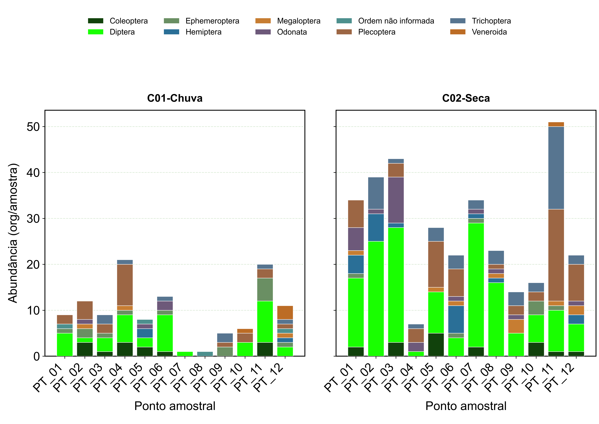
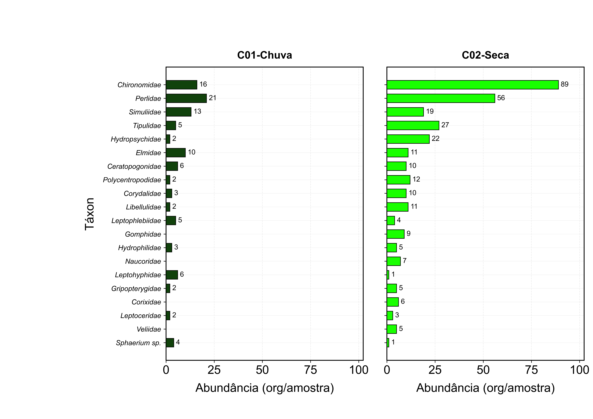
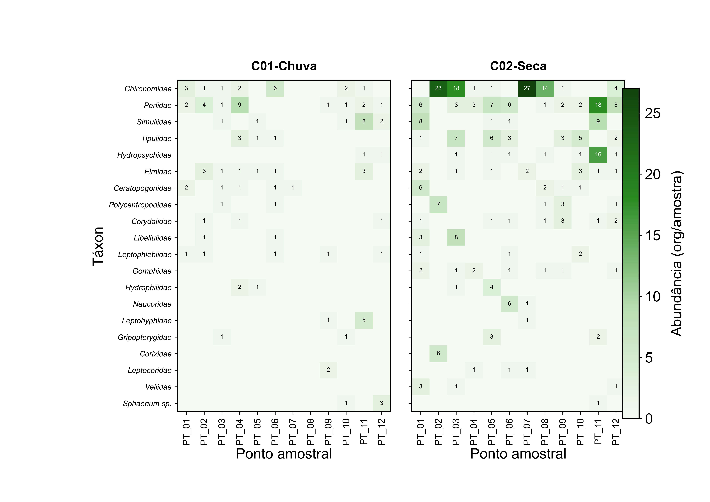
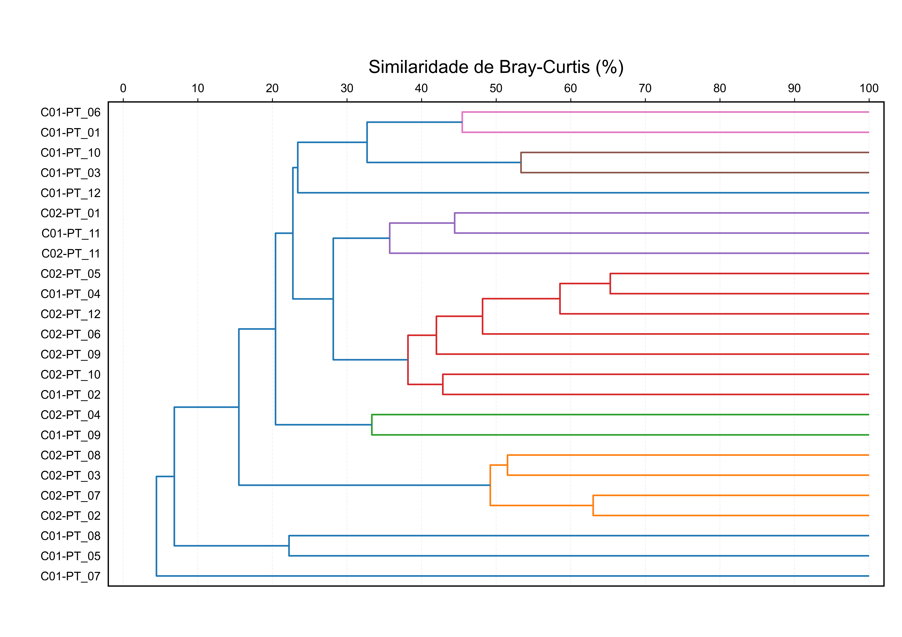
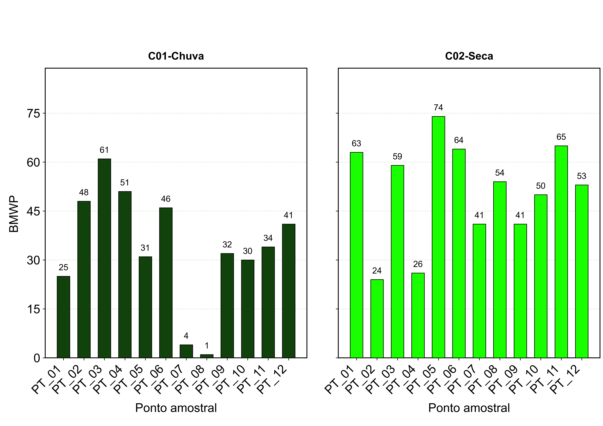
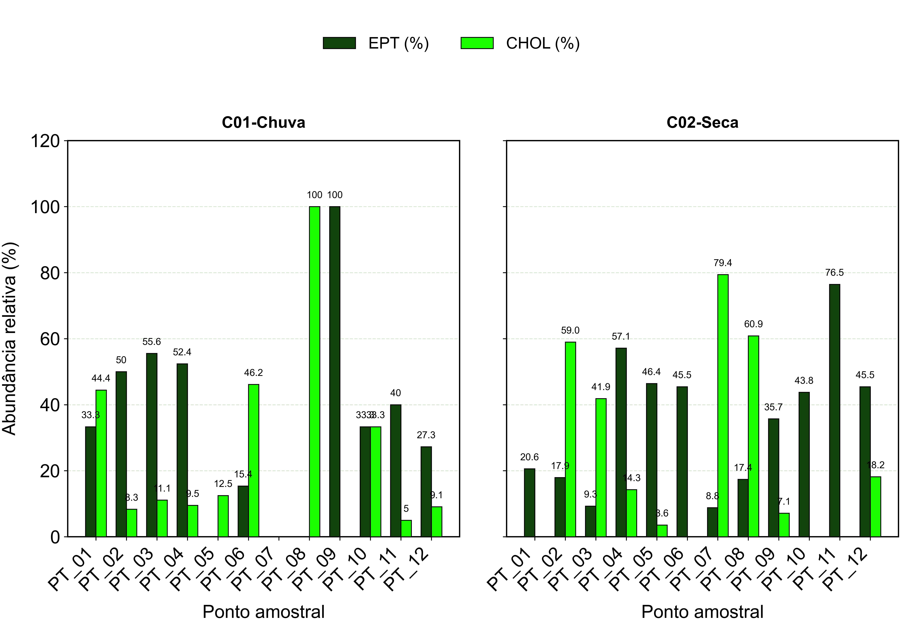
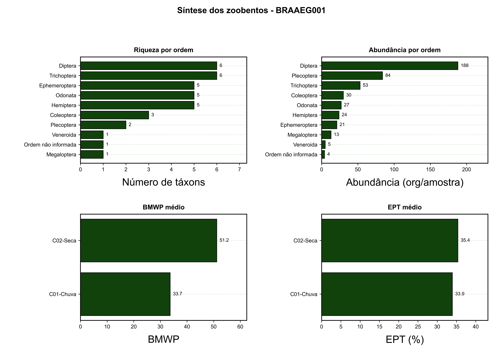

Resultados de Zoobentos - BRAAEG001
Pacote gerado em A4 paisagem, com painéis por estação/campanha nos gráficos de comparação por ponto.
Premissas técnicas
- Registros de zoobentos tratados como quantitativos.
- Abundância consolidada em org/amostra.
- BMWP calculado por famílias únicas presentes em cada ponto e campanha.
- EPT calculado por abundância relativa de Ephemeroptera, Plecoptera e Trichoptera.
- CHOL calculado por abundância relativa de Chironomidae e Oligochaeta.
- Similaridade de Bray-Curtis mantida agrupada entre amostras.
Resumo
| Indicador | Valor |
|---|
| Linhas consolidadas | 174 |
| Táxons | 35 |
| Abundância total | 449 org/amostra |
| Táxon dominante | Chironomidae |
| Ordem dominante | Diptera |
| BMWP máximo | 74 |
Figuras
 Riqueza por ponto
Riqueza por ponto Abundância total por ponto
Abundância total por ponto
Abundância por ordem
Abundância por táxon
Abundância por táxon e ponto Diversidade alfa
Diversidade alfa
Similaridade Suficiência amostral
Suficiência amostral
BMWP por ponto
EPT e CHOL
Síntese